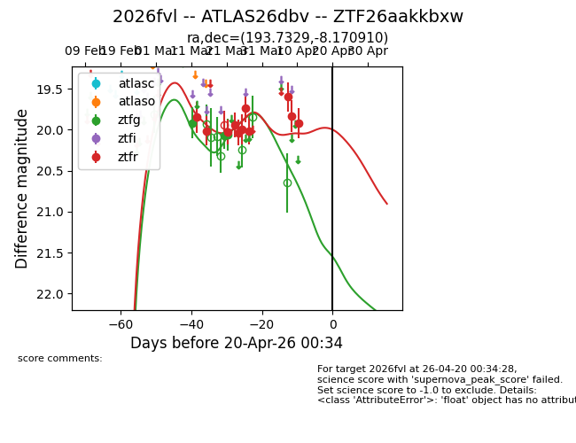
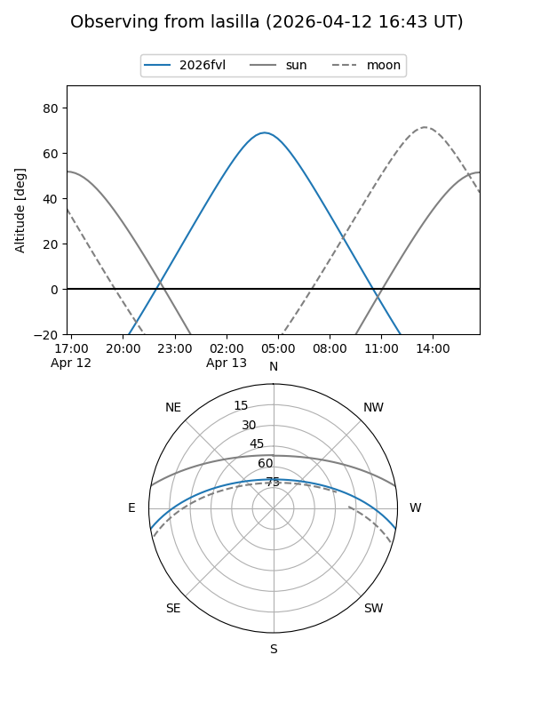
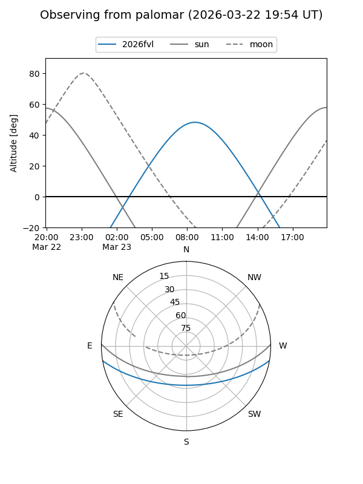
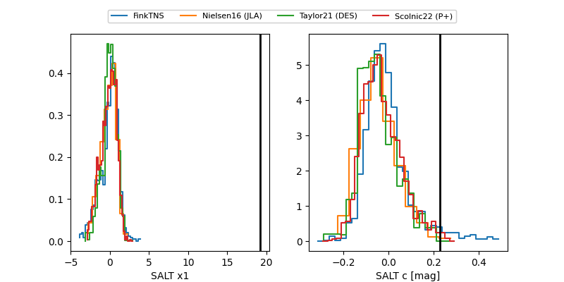

2026fvl
Target 2026fvl at 2026-04-20 00:45
Aliases and brokers:
FINK: link
Lasair: link
ALeRCE: link
TNS: link
YSE: link
alt names
ZTF26aakkbxw (ztf,fink_ztf)
2026fvl (tns,yse)
ATLAS26dbv (atlas)
Coordinates:
equatorial (ra, dec) = 193.7329,-8.17091
equatorial (HMS+DMS) = 12:54:55.89,-08:10:15.27
galactic (l, b) = (304.4278,+54.69069)
Flags:
Photometry:
last ztfg=20.06, ztfr=19.92
3 ztfg, 11 ztfr detections
Lightcurve

Visibility


Additional plots
